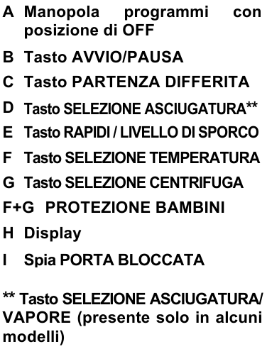
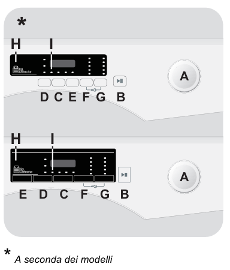

Istruzioni lavasciuga
Sicurezza
- Non utilizzare l'apparecchio se la superficie è danneggiata.
- Non appoggiare oggetti sulla lavasciuga.
- Sorvegliare il processo di lavaggio e asciugatura, specialmente con bambini presenti.
Come utilizzare la lavasciuga
- Selezione programma: selezionare il programma desiderato.
- Regolazione impostazioni: regola la temperatura e la centirfuga se necessario.
- Detersivo: mettere il detersivo nelle relative vaschette (sinistra sapone, centrale ammorbidente, destra (prelavaggio).
- Avvio: premere il tasto di accensione per circa 1 secondo.
- Spegnimento: quando il ciclo è finito, ruotare la manopola su OFF.


Programmi di lavaggio
- Cotone: per biancheria di cotone resistente.
- Eco 40-60: per biancheria di cotone normalmente sporca.
- Sintetici: per biancheria di tessuti sintetici.
- Rapido: per piccoli carichi e indumenti poco sporchi.
Programmi di asciguatura
- Selezione del programma di asciugatura: scegliere il programma di asciugatura adatto (Cotone, Sintetici, Lana).
- Grado di asciugatura: selezionare il grado di asciugatura desiderato (Extra Asciutto, Pronto Stiro, Armadio).
- Programmi a tempo: selezionare uno dei programmi a tempo disponibili (120 min, 90 min, 60 min, 30 min).
Programmi di lavaggio e asciugatura
- Selezione del programma di asciugatura: scegliere il programma di asciugatura adatto (Cotone, Sintetici, Lana).
- Grado di asciugatura: selezionare il grado di asciugatura desiderato (Extra Asciutto, Pronto Stiro, Armadio).
- Programmi a tempo: selezionare uno dei programmi a tempo disponibili (120 min, 90 min, 60 min, 30 min).
Funzioni speciali
- Partenza differita: programmare l’avvio del ciclo con un ritardo massimo di 24 ore.
- Livello di sporco: scegliere tra 3 livelli di intensità di lavaggio.
- Protezione bambini: premere contemporaneamente i tasti "F" e "G" per circa 3 secondi.